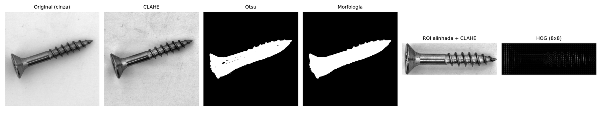
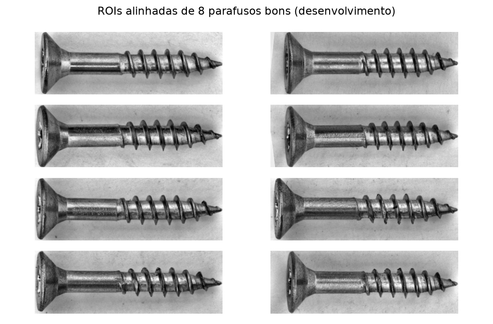
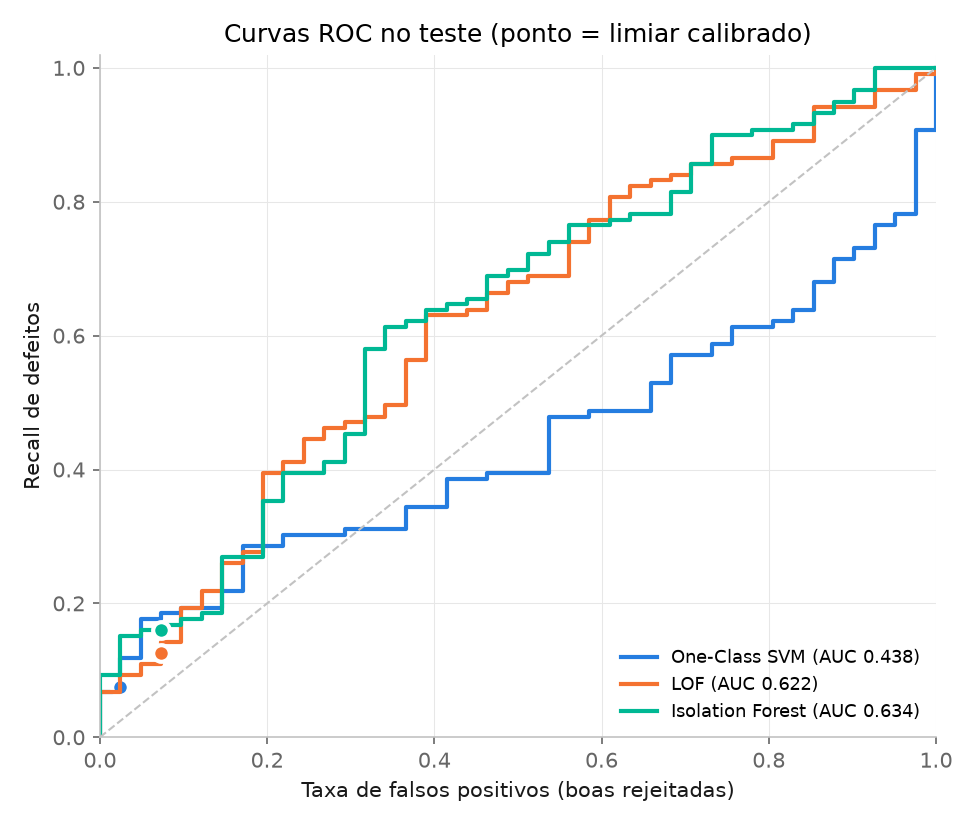
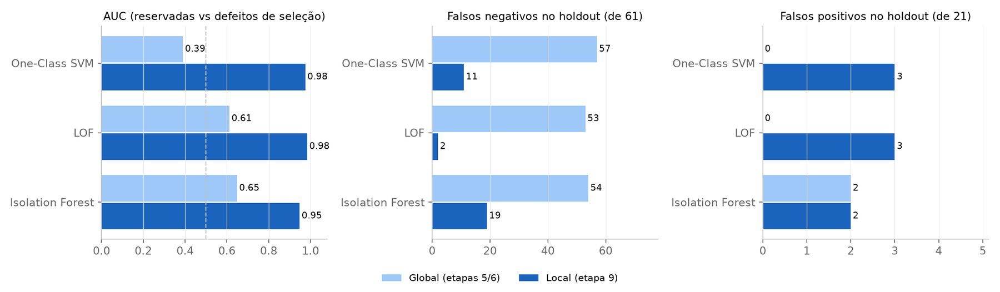
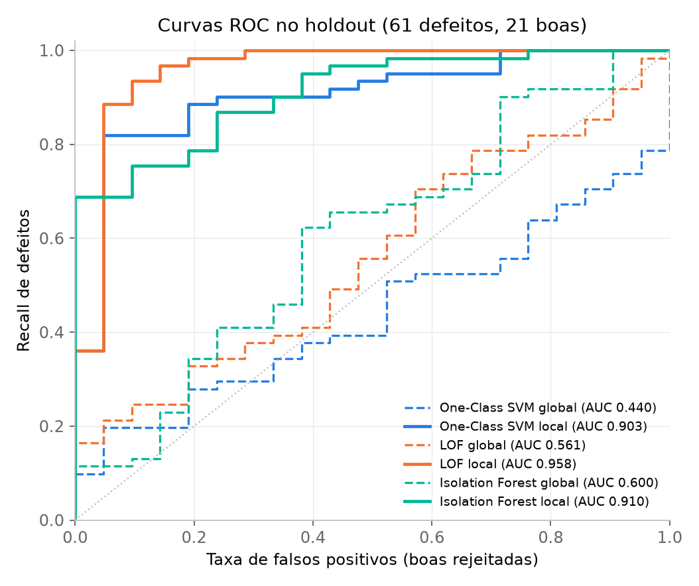
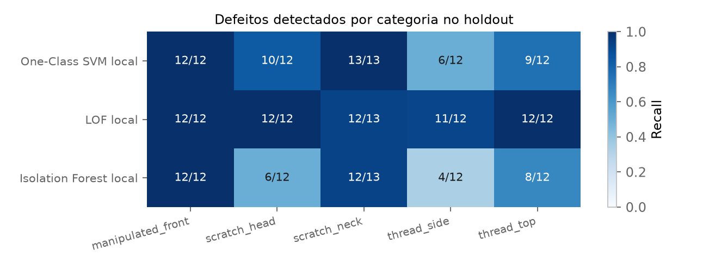
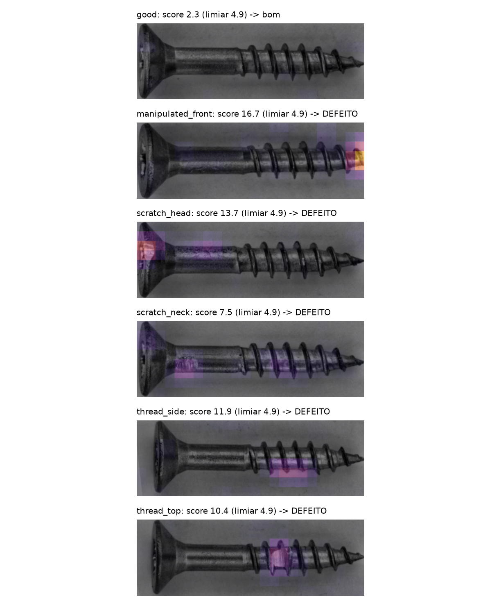
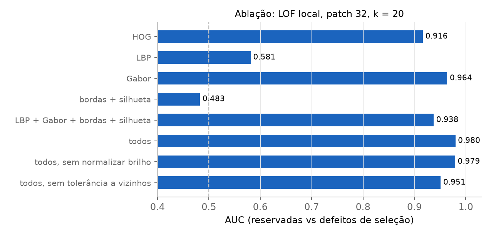
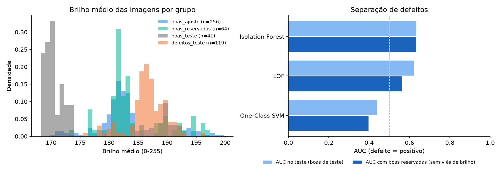

Inspeção Clássica de Parafusos
Detectar parafusos defeituosos aprendendo só com parafusos bons, usando apenas visão computacional clássica: segmentação, descritores feitos à mão e três detectores One-Class (SVM, LOF e Isolation Forest). A virada do projeto foi trocar um vetor global por descritores locais sobre a peça alinhada.
Aprender o normal para reconhecer o defeito
Numa fábrica quase todas as peças são boas e cada defeito é diferente. Por isso o problema é de detecção de anomalias (One-Class): os modelos veem só as 320 imagens de parafusos bons do treino e precisam reconhecer, no teste, cinco tipos de defeito que nunca viram. O objetivo do grupo é minimizar falsos negativos, isto é, parafusos defeituosos aprovados.

Segmentar e alinhar a peça

O alinhamento funciona bem: todo parafuso sai com a cabeça à esquerda e o eixo na horizontal, numa ROI de 384 x 128 pixels. Isso vai ser a chave da melhoria: a mesma posição da ROI corresponde sempre à mesma parte da peça.

Um vetor global por parafuso: perto do acaso
A primeira versão descrevia cada ROI com um vetor de 25.413 atributos: HOG 8x8 (25.380), Gabor (24), bordas (3) e geometria (6), reduzido por PCA e passado aos detectores. Com protocolo rigoroso (ajuste nas 256 boas de desenvolvimento, limiar nas 64 boas reservadas, teste usado uma vez), o resultado no teste completo foi:
| Modelo (vetor global) | FN (de 119) | FP (de 41) | Recall | AUC |
|---|---|---|---|---|
| Isolation Forest | 100 | 3 | 16,0% | 0,634 |
| LOF | 104 | 3 | 12,6% | 0,622 |
| One-Class SVM | 110 | 1 | 7,6% | 0,438 |

O HOG global ocupa 99,9% do vetor e não tem sinal
Testamos cada bloco de atributos separadamente (AUC entre boas reservadas e metade dos defeitos; 0,5 é o acaso):
| Bloco | Dimensão | AUC LOF | AUC Isolation Forest |
|---|---|---|---|
| HOG 8x8 global | 25.380 | 0,48 | 0,47 |
| HOG 16x16 global | 3.864 | 0,51 | 0,60 |
| Gabor | 24 | 0,72 | 0,66 |
| Bordas | 3 | 0,61 | 0,65 |
| Geometria | 6 | 0,57 | 0,53 |
- Os defeitos são pequenos e locais: um risco, um filete amassado, a ponta torta.
- Entre parafusos bons há muita variação normal espalhada pela peça inteira: fase da rosca, reflexos, pequenos desalinhamentos.
- Num vetor que resume a peça, essa variação pesa mais que um defeito de poucos pixels. Com 25 mil dimensões e 256 exemplos, as distâncias ficam quase iguais para todos.
Comparar região por região
Um vetor de 25 mil atributos por parafuso. Um detector compara o parafuso inteiro com parafusos bons. O defeito se dilui na variação normal da peça.
A ROI alinhada vira uma grade de patches. Um detector por posição compara cada região só com a mesma região dos parafusos bons. O parafuso é julgado pelos seus piores patches.
Patches sobrepostos
Lado de 24, 32 ou 48 pixels, passo de meio patch, sobre a ROI 384 x 128 com brilho normalizado.
Cerca de 60 números
HOG local, histograma LBP, energia dos 12 filtros de Gabor do projeto, densidade de bordas e silhueta.
Um por posição
SVM, LOF ou Isolation Forest ajustado com os patches das boas naquela posição e nas vizinhas.
Piores patches
Score padronizado por posição; o parafuso recebe a média dos 3 patches mais anômalos.
As etapas seguem esta ordem porque cada uma usa a anterior. Os três detectores são os mesmos de antes; só a representação mudou. Como o score é por posição, o modelo também mostra onde está o defeito.
Escolher sem olhar o holdout
O teste completo já tinha sido consultado na etapa 8. Antes de qualquer experimento ele foi dividido, por categoria e com semente fixa, em seleção e holdout.
As escolhas (168 combinações de patch, descritores, vizinhança, agregação e hiperparâmetros) usaram só os 58 defeitos de seleção contra as 64 boas reservadas.
O holdout (61 defeitos e 21 boas) foi avaliado uma única vez, com limiar calibrado nas 64 boas reservadas.
| Modelo escolhido | Patch | Descritores | Parâmetros | AUC na seleção |
|---|---|---|---|---|
| LOF | 32 | todos | k = 10 | 0,984 |
| One-Class SVM | 24 | todos | RBF, nu = 0,05 | 0,975 |
| Isolation Forest | 24 | sem HOG | 200 árvores, 512 amostras | 0,948 |
De 53 defeitos aprovados para 2
| Modelo | FN antes | FN depois | FP antes | FP depois | AUC antes | AUC depois |
|---|---|---|---|---|---|---|
| LOF | 53 | 2 | 0 | 3 | 0,561 | 0,958 |
| One-Class SVM | 57 | 11 | 0 | 3 | 0,440 | 0,903 |
| Isolation Forest | 54 | 19 | 2 | 2 | 0,600 | 0,910 |
FN: defeito aprovado (de 61). FP: parafuso bom rejeitado (de 21). "Antes" são os modelos globais congelados, avaliados nas mesmas 82 imagens.



O modelo aponta a região suspeita

Cada posição da grade tem seu próprio detector, então o score de cada patch diz o quanto aquela região difere da mesma região em parafusos bons. Isso torna a decisão interpretável: um inspetor vê não só "defeito", mas onde olhar.
O LOF é o que mais ganha porque mede densidade local: um patch defeituoso fica longe de todos os vizinhos bons daquela posição. O Isolation Forest sorteia atributos para isolar pontos e perde parte do sinal quando ele se concentra em poucos atributos.
O que cada ingrediente contribui

- O mesmo HOG que tinha AUC 0,48 como vetor global chega a 0,916 quando usado por patch. A localidade é o que faz a diferença.
- Gabor local é o descritor isolado mais forte (0,964): ele mede a textura periódica dos filetes, que é justamente o que os defeitos de rosca quebram.
- Tirar a tolerância a vizinhos derruba a AUC para 0,951: as posições vizinhas absorvem a fase da rosca e pequenos desalinhamentos.
- Combinar todos os descritores dá o melhor resultado (0,980).
O que verificamos
As 41 boas do teste do MVTec screw são mais escuras (brilho médio 170) que as boas de treino (184) e os defeitos (187). Só o brilho já separaria boas de defeitos do teste. Por isso a seleção nunca usou as boas de teste, o brilho é normalizado em cada imagem e, ao lado de cada resultado, informamos a AUC contra as boas reservadas: 0,986 para o LOF local no holdout.

- Dentro do próprio teste (boas de teste contra defeitos de teste, mesma aquisição) o LOF local ainda separa com AUC 0,93 na seleção: ele detecta defeitos, não diferenças de aquisição.
- O holdout é pequeno: cada boa vale 4,8 pontos de especificidade e cada defeito 1,6 ponto de recall.
- As AUCs da metade de seleção são otimistas, porque a busca foi feita nela. Os números a reportar são os do holdout.
O que levamos deste projeto
- Modelo escolhido: LOF com descritores locais. Detecta 59 de 61 defeitos do holdout e rejeita 3 de 21 boas, usando só visão computacional clássica e 256 imagens boas.
- O pipeline das etapas 1 e 2 (CLAHE, Otsu, morfologia, ROI alinhada) foi mantido e se tornou a base da melhoria: sem o alinhamento, comparar região por região não faria sentido.
- A lição principal: para defeitos pequenos, a representação importa mais que o detector. Os mesmos SVM, LOF e Isolation Forest passaram de perto do acaso para AUC acima de 0,9.
Como rodar
export DATASET_DIR="$HOME/Downloads/data"; export TRAIN_FLAT_IS_GOOD=true
python -m unittest discover -s tests
python -m src.defect_split --study results/stage3/study_v1 --out results/stage9/defect_split_v1.json
python -m src.roi_cache --study results/stage3/study_v1 --out results/stage9/roi_cache_v1.npz
python -m src.stage9_experiments select --out results/stage9/selection_v1
python -m src.stage9_experiments final --selection results/stage9/selection_v1/selection.json \
--out results/stage9/final_v1
python -m src.stage9_figures --out results/stage9/figuresComandos completos no README, seção "Etapas 6 a 9". A lista de tudo o que foi alterado está em ALTERACOES.md, e o notebook notebooks/04_avaliacao_classica.ipynb mostra as tabelas e figuras.